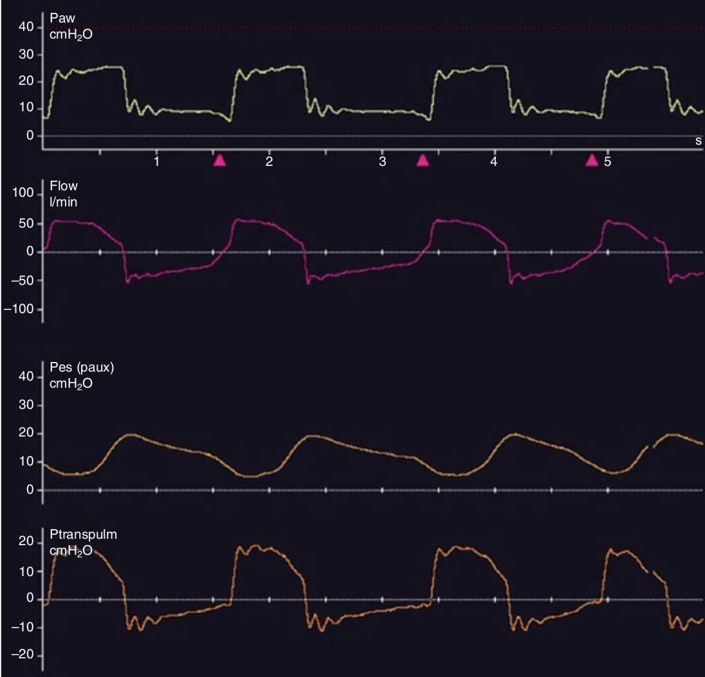

هنگام تنفس خودبخود اندازه گیری فشار ترانس آلوئولار مقدور نیست، زیرا که نمی توان فشار پلاتو را اندازه گرفت. البته میتوان آن را بکمک فشار ترانس پولموناری تخمین زد. فشار ترانس پولموناری تفاضل فشار راه هوائی و فشار مروی می باشد. در اینجا نیز مانند تنفس پاسیو، فشار ترانس پولموناری می بایست کمتر از 20 سانتی متر آب باشد تا از آسیب به ریه جلوگیری شود.

در مورد فشار ترانس پولموناری کدام مورد زیر غلط است؟
۱ - برای ارزیابی فشار ترانس آلوئولار هنگام تنفس خودبخود بکار میرود
۲ - فشار ترانس آلوئولار را بیش از اندازه برآورد می کند
۳ - توسط انسداد پایان دمی و بازدمی اندازه گیری میشود
۴ - هنگام تهویه بدون ایجاد انسداد اندازه گیری می شود
۵ - باید کمتر از ۲۰ سانتی متر آب باشد